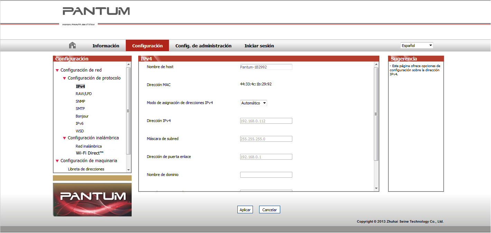

4. Configuración de red cableada (para modelos de impresoras de red cableada)
Es posible que tenga que establecer algunos parámetros de red en la impresora. Estos parámetros se pueden establecer desde el servidor web integrado.
4.1. Establecer dirección IP
La dirección IP de la impresora se puede obtener automáticamente a través de la función DHCP o establecerla de forma manual.
| Configuración automática
La función de configuración automática DHCP está habilitada de forma predeterminada en la impresora.
1. Conecte la impresora a la red mediante el cable de red y complete la preparación inicial.
2. La impresora obtendrá automáticamente la dirección IP asignada por el servidor. La dirección IP obtenida automáticamente se puede utilizar luego de unos minutos.
|
|
Nota:
|
• Si la función DHCP no puede obtener la dirección IP de forma automática, la impresora usará la dirección IP predeterminada: 169.254.xx.xx.
• Debido a las funciones de DHCP, la dirección IP de la impresora asignada automáticamente por la red puede variar si no se usa la impresora durante un período de tiempo prolongado o si el punto de acceso a la red cambia, lo que puede provocar que la impresora no se pueda conectar. Se recomienda que la dirección IP asignada automáticamente por la red esté vinculada a la dirección Mac de la impresora cuando la función DHCP está habilitada.
|
| Configuración manual
Escriba la dirección IP en la barra de direcciones del navegador web para abrir el servidor web integrado.
1. Haga clic en Configuración en la barra de navegación para abrir la página Configuración.
2. Seleccione Configuración de red - Configuración IPV4.
3. Establezca el modo de asignación de direcciones IP (Manual), la dirección IP y la máscara de subred. El resto de elementos son opcionales.
4. Haga clic en Aplicar para aceptar la configuración.
4.2. Instalar la impresora en la red
En esta configuración, la impresora se conecta directamente a la red y se puede configurar para permitir que todas las computadoras de la red impriman directamente en la impresora.
1. Antes de iniciar la impresora, debe conectar el cable de red al puerto de red de la impresora para establecer conexión directa con la red.
2. Inicie la impresora y espere a que el indicador de estado del panel de control muestre el estado Listo, tal y como se muestra más abajo.

3. Inserte el CD de la impresora en la computadora. Si el software instalador no se inicia automáticamente, busque el archivo "setup.exe" del CD y haga doble clic para ejecutarlo.
4. Siga las instrucciones de funcionamiento del instalador.
5. Continúe para completar la instalación.
4.3. Productos de configuración de la red
4.3.1. Consultar o cambiar la configuración de la red
Puede usar el servidor web integrado para ver o cambiar la configuración de la IP.
1. Presione prolongadamente el botón "Cancelar/Continuar" del panel de control para imprimir la página de información de demostración y ver la dirección IP de la impresora. La página de demostración se puede imprimir presionando prolongadamente el botón del panel de control (tal y como se muestra más abajo en la imagen) mientras la impresora está en estado inactivo.
2. Escriba la dirección IP en la barra de direcciones del navegador web para acceder al servidor web integrado.
3. Haga clic en la pestaña Configuración para obtener información de red. Cambie la configuración según sea necesario.

4.3.2. Establecer o cambiar la contraseña de inicio de sesión del servidor web
Use el servidor web integrado para establecer una contraseña de red o cambiar la contraseña existente.
|
|
Nota:
|
• El nombre de usuario predeterminado es "admin" y la contraseña inicial es "000000".
|
1. Para abrir el servidor web integrado, primero inicie sesión.
2. Haga clic en la pestaña Config. de administración.
3. Escriba la nueva contraseña en el cuadro Contraseña y en el cuadro Confirmar contraseña.
4. En la parte inferior de la ventana, haga clic en el botón Aplicar para guardar la configuración.
4.3.3. Restaurar la configuración de fábrica
Si quiere restablecer la configuración de todos los parámetros de la impresora, puede restaurar la configuración de fábrica presionando prolongadamente el botón "Cancelar/Continuar" cuando la impresora está apagada para encenderla durante 10 segundos hasta que la impresora muestre el estado Listo para terminar la restauración.